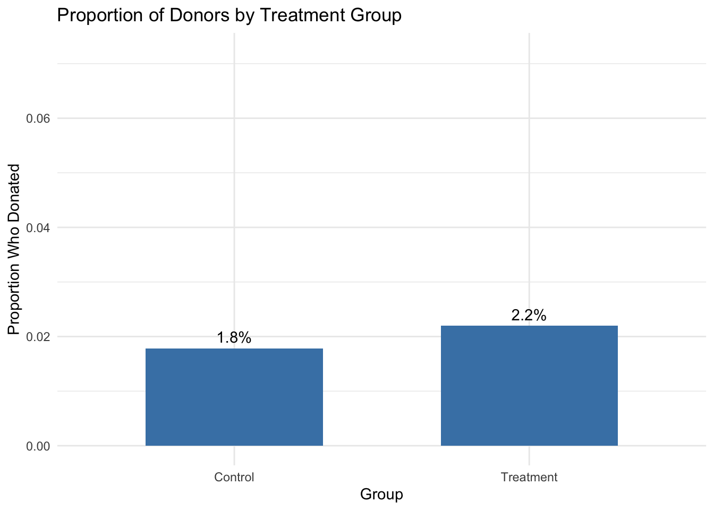
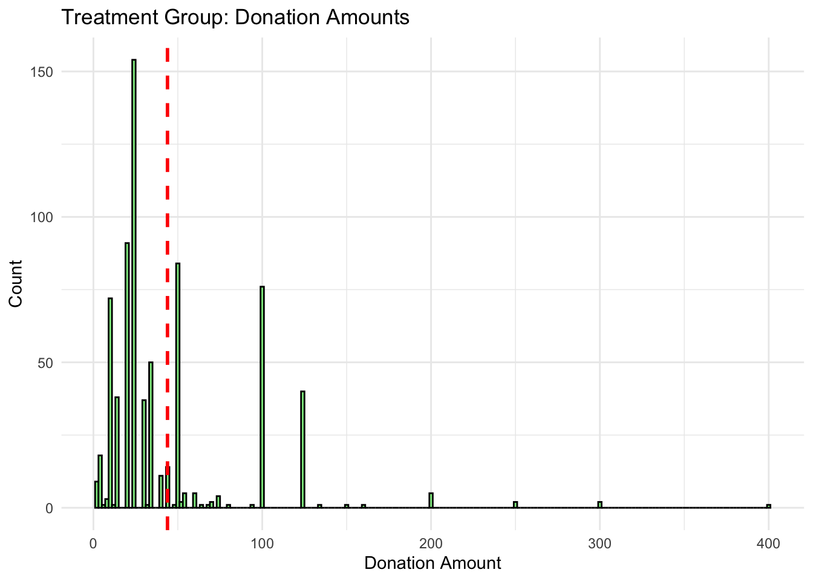
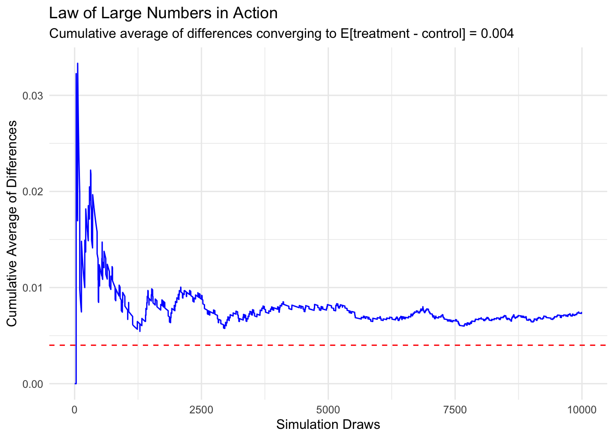
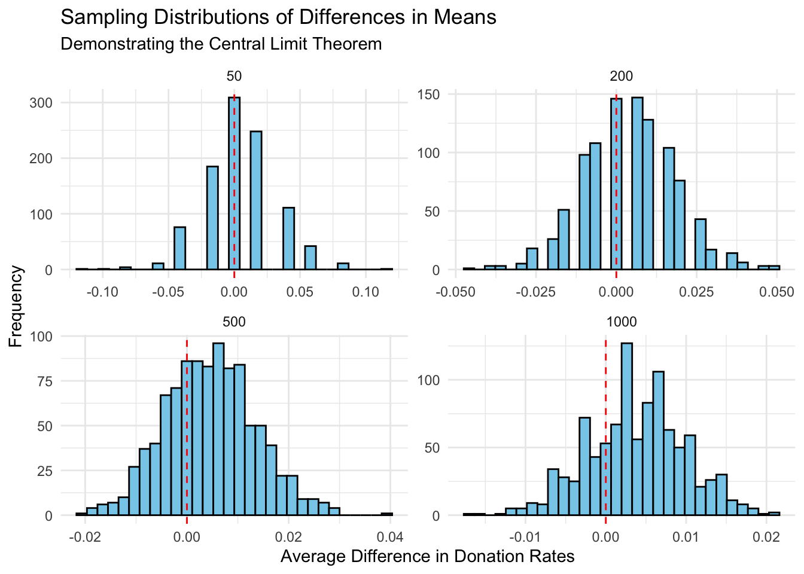

library(haven)
library(margins)
library(ggplot2)
library(dplyr)
library(broom)
library(knitr)A Replication of Karlan and List (2007)
Introduction
Dean Karlan at Yale and John List at the University of Chicago conducted a field experiment to test the effectiveness of different fundraising letters. They sent out 50,000 fundraising letters to potential donors, randomly assigning each letter to one of three treatments: a standard letter, a matching grant letter, or a challenge grant letter. They published the results of this experiment in the American Economic Review in 2007. The article and supporting data are available from the AEA website and from Innovations for Poverty Action as part of Harvard’s Dataverse.
Description of the experiment: The experiment was designed to test whether offering a matching grant affects charitable giving. Karlan and List collaborated with a liberal nonprofit organization and sent fundraising letters to over 50,000 prior donors. These letters were randomly assigned to either a control group or a treatment group.
The control group received a standard fundraising letter. The treatment group received a nearly identical letter, except it included an announcement that a “concerned member” would match their donation. Within the treatment group, there were further randomizations: donors received different match ratios (1:1, 2:1, or 3:1), different maximum matching amounts ($25,000, $50,000, $100,000, or unspecified), and different suggested donation amounts (equal to, 1.25×, or 1.5× their previous highest contribution).
This design allows the authors to estimate both the overall effect of matching gifts and to test whether larger match ratios or different framing elements lead to higher donations. This project seeks to replicate their results.
Data
Description
The dataset contains 50,083 observations and 51 variables. Each observation corresponds to one prior donor who received a fundraising letter. Individuals were randomly assigned to a control group or a treatment group. Within the treatment group, they were further randomly assigned to different match ratios, match thresholds, and suggested donation amounts. Key variables include: - treatment: indicates if the donor received a matching gift offer (1 = yes, 0 = no) - ratio2, ratio3: dummies for match ratios of 2:1 and 3:1 (baseline is 1:1) - size25, size50, size100: dummies for match maximum amount - askd1, askd2, askd3: suggested donation amounts based on prior donation - amount: actual amount donated - gave: binary variable indicating whether the donor gave (1 = yes, 0 = no)
We will use these variables to replicate the results in Karlan and List (2007).
Balance Test
As an ad hoc test of the randomization mechanism, I provide a series of tests that compare aspects of the treatment and control groups to assess whether they are statistically significantly different from one another.
#month since last donation
tidy(t.test(mrm2 ~ treatment, data = data))# A tibble: 1 × 10
estimate estimate1 estimate2 statistic p.value parameter conf.low conf.high
<dbl> <dbl> <dbl> <dbl> <dbl> <dbl> <dbl> <dbl>
1 -0.0137 13.0 13.0 -0.120 0.905 33394. -0.238 0.211
# ℹ 2 more variables: method <chr>, alternative <chr>tidy(lm(mrm2 ~ treatment, data = data))# A tibble: 2 × 5
term estimate std.error statistic p.value
<chr> <dbl> <dbl> <dbl> <dbl>
1 (Intercept) 13.0 0.0935 139. 0
2 treatment 0.0137 0.115 0.119 0.905# gender
tidy(t.test(female ~ treatment, data = data))# A tibble: 1 × 10
estimate estimate1 estimate2 statistic p.value parameter conf.low conf.high
<dbl> <dbl> <dbl> <dbl> <dbl> <dbl> <dbl> <dbl>
1 0.00755 0.283 0.275 1.75 0.0795 32451. -0.000889 0.0160
# ℹ 2 more variables: method <chr>, alternative <chr>tidy(lm(female ~ treatment, data = data))# A tibble: 2 × 5
term estimate std.error statistic p.value
<chr> <dbl> <dbl> <dbl> <dbl>
1 (Intercept) 0.283 0.00350 80.7 0
2 treatment -0.00755 0.00429 -1.76 0.0787# couple
tidy(t.test(couple ~ treatment, data = data))# A tibble: 1 × 10
estimate estimate1 estimate2 statistic p.value parameter conf.low conf.high
<dbl> <dbl> <dbl> <dbl> <dbl> <dbl> <dbl> <dbl>
1 0.00162 0.0930 0.0914 0.582 0.560 32439. -0.00383 0.00706
# ℹ 2 more variables: method <chr>, alternative <chr>tidy(lm(couple ~ treatment, data = data))# A tibble: 2 × 5
term estimate std.error statistic p.value
<chr> <dbl> <dbl> <dbl> <dbl>
1 (Intercept) 0.0930 0.00226 41.1 0
2 treatment -0.00162 0.00277 -0.584 0.559Balance Test Results
To evaluate whether the randomization successfully created comparable groups, we examine balance on several pre-treatment covariates: months since last donation (mrm2), gender (female), and couple status.
For months since last donation, the mean in the control group is 12.998 months and 13.012 months in the treatment group. The t-test yields a p-value of 0.9049, and the linear regression coefficient is not significant. This suggests no systematic difference between groups.
For gender, the control group has a female proportion of 28.3%, compared to 27.5% in the treatment group. The t-test gives a p-value of 0.0795. Although this is closer to significance, it is still above the 5% threshold, and the regression confirms no strong evidence of imbalance.
For couple status, the proportions are 9.30% (control) and 9.14% (treatment), with a p-value of 0.5604. No evidence suggests imbalance on this variable either.
These results confirm that the treatment assignment appears balanced across key demographic characteristics, supporting the validity of the experimental design.
Experimental Results
Charitable Contribution Made
First, I analyze whether matched donations lead to an increased response rate of making a donation.
# Calculate donation rate by treatment group
donation_rate <- data %>%
group_by(treatment) %>%
summarise(response_rate = mean(gave == 1, na.rm = TRUE))
# Rename group labels
donation_rate$treatment <- factor(donation_rate$treatment, labels = c("Control", "Treatment"))
# Plot
ggplot(donation_rate, aes(x = treatment, y = response_rate)) +
geom_col(fill = "steelblue", width = 0.6) +
geom_text(aes(label = scales::percent(response_rate, accuracy = 0.1)), vjust = -0.5) +
ylim(0, max(donation_rate$response_rate) + 0.05) +
labs(
title = "Proportion of Donors by Treatment Group",
x = "Group",
y = "Proportion Who Donated"
) +
theme_minimal()
The bar plots display the donation response rate. For the control group, we have 1.8% of individual donated and for the treatment group, we have 2.2% of individuals donated. This suggests that individuals who received the matching donation offer were more likely to donate compared to those who did not.
tidy(t.test(gave ~ treatment, data = data))# A tibble: 1 × 10
estimate estimate1 estimate2 statistic p.value parameter conf.low conf.high
<dbl> <dbl> <dbl> <dbl> <dbl> <dbl> <dbl> <dbl>
1 -0.00418 0.0179 0.0220 -3.21 0.00133 36577. -0.00673 -0.00163
# ℹ 2 more variables: method <chr>, alternative <chr>tidy(lm(gave ~ treatment, data = data))# A tibble: 2 × 5
term estimate std.error statistic p.value
<chr> <dbl> <dbl> <dbl> <dbl>
1 (Intercept) 0.0179 0.00110 16.2 4.78e-59
2 treatment 0.00418 0.00135 3.10 1.93e- 3The results show a statistically significant difference: individuals in the treatment group were more likely to donate than those in the control group. While the donation rates were low overall — roughly 1.8% in the control group versus 2.2% in the treatment group — the difference of about 0.4 percentage points is small but meaningful, and it is unlikely to have occurred by chance (p-value < 0.01). This tells us something powerful about human behavior: even a subtle nudge, like telling people their donation will be matched, can influence their decision to give. People seem more willing to act charitably when they believe their contribution will have a greater impact. In this case, the match offer acted as a psychological motivator, reinforcing the value and urgency of giving.
data <- data %>%
mutate(treatment = ifelse(ratio > 0, 1, 0))
# Probit model
probit_model <- glm(gave ~ treatment, family = binomial(link = "probit"), data = data)
tidy(probit_model)# A tibble: 2 × 5
term estimate std.error statistic p.value
<chr> <dbl> <dbl> <dbl> <dbl>
1 (Intercept) -2.10 0.0233 -90.1 0
2 treatment 0.0868 0.0279 3.11 0.00185mfx <- margins(probit_model)
summary(mfx) factor AME SE z p lower upper
treatment 0.0043 0.0014 3.1044 0.0019 0.0016 0.0070The estimated average marginal effect of the treatment assignment is approximately 0.0043, meaning that the presence of a matching offer increased the probability of donating by about 0.4 percentage points.
Differences between Match Rates
Next, I assess the effectiveness of different sizes of matched donations on the response rate.
# Filter treatment groups only
match_data <- data %>%
filter(ratio %in% c(1, 2, 3)) %>%
mutate(gave = ifelse(amount > 0, 1, 0))
# Split into groups
group_1_1 <- match_data %>% filter(ratio == 1)
group_2_1 <- match_data %>% filter(ratio == 2)
group_3_1 <- match_data %>% filter(ratio == 3)
# Run t-tests
t_2_vs_1 <- tidy(t.test(group_2_1$gave, group_1_1$gave))
t_3_vs_1 <- tidy(t.test(group_3_1$gave, group_1_1$gave))
t_2_vs_1# A tibble: 1 × 10
estimate estimate1 estimate2 statistic p.value parameter conf.low conf.high
<dbl> <dbl> <dbl> <dbl> <dbl> <dbl> <dbl> <dbl>
1 0.00188 0.0226 0.0207 0.965 0.335 22225. -0.00194 0.00571
# ℹ 2 more variables: method <chr>, alternative <chr>t_3_vs_1# A tibble: 1 × 10
estimate estimate1 estimate2 statistic p.value parameter conf.low conf.high
<dbl> <dbl> <dbl> <dbl> <dbl> <dbl> <dbl> <dbl>
1 0.00198 0.0227 0.0207 1.02 0.310 22215. -0.00185 0.00582
# ℹ 2 more variables: method <chr>, alternative <chr>Neither the $2:$1 nor the $3:$1 match rate significantly increases the probability of donation compared to the $1:$1 rate. This aligns with the authors’ interpretation on page 8 — that larger match ratios do not provide additional effectiveness. Our t-tests support this claim: p-values for both comparisons are well above conventional thresholds for statistical significance.
# Use ratio1 as the base category
match_data <- match_data %>%
mutate(
ratio2 = as.numeric(ratio == 2),
ratio3 = as.numeric(ratio == 3)
)
# Regression using ratio2 and ratio3 (1:1 is base)
model <- glm(gave ~ ratio2 + ratio3, family = binomial(link = "probit"), data = match_data)
# Show marginal effects
tidy(margins(model))# A tibble: 2 × 5
term estimate std.error statistic p.value
<chr> <dbl> <dbl> <dbl> <dbl>
1 ratio2 0.00191 0.00198 0.965 0.335
2 ratio3 0.00201 0.00198 1.01 0.310The estimated marginal effect for the 2:1 match is 0.0019 with a p-value of 0.335. The estimated marginal effect for the 3:1 match is 0.0020 with a p-value of 0.310. These results are not statistically significant, indicating that neither the 2:1 nor the 3:1 match leads to a higher probability of giving compared to the 1:1 match.
# Direct from data
response_rates <- match_data %>%
group_by(ratio) %>%
summarise(response_rate = mean(gave))
rate_2_vs_1 <- response_rates$response_rate[response_rates$ratio == 2] -
response_rates$response_rate[response_rates$ratio == 1]
rate_3_vs_2 <- response_rates$response_rate[response_rates$ratio == 3] -
response_rates$response_rate[response_rates$ratio == 2]
# Run the probit model using ratio as a categorical variable
model_factor <- glm(gave ~ factor(ratio), family = binomial(link = "probit"), data = match_data)
mfx <- summary(margins(model_factor))
mfx_diff_2_vs_1 <- mfx$AME[mfx$factor == "ratio2"]
mfx_diff_3_vs_2 <- mfx$AME[mfx$factor == "ratio3"] - mfx$AME[mfx$factor == "ratio2"]
list(
direct_data_differences = list(
`2:1 vs 1:1` = rate_2_vs_1,
`3:1 vs 2:1` = rate_3_vs_2
),
regression_marginal_effect_differences = list(
`2:1 vs 1:1` = mfx_diff_2_vs_1,
`3:1 vs 2:1` = mfx_diff_3_vs_2
)
)$direct_data_differences
$direct_data_differences$`2:1 vs 1:1`
[1] 0.001884251
$direct_data_differences$`3:1 vs 2:1`
[1] 0.000100024
$regression_marginal_effect_differences
$regression_marginal_effect_differences$`2:1 vs 1:1`
ratio2
0.001884251
$regression_marginal_effect_differences$`3:1 vs 2:1`
ratio3
0.000100024 From both the raw data and the regression model, we find: - The difference in response rate between 2:1 and 1:1 is approximately 0.00188 (0.19 percentage points). - The difference in response rate between 3:1 and 2:1 is a mere 0.00010 (0.01 percentage points).
These values are extremely small, and consistent across both the direct calculation from raw data and the marginal effects estimated from the probit model. The response rate differences between 1:1, 2:1, and 3:1 match ratios are economically negligible and statistically insignificant. This strongly supports the conclusion drawn in Karlan and List (2007):
> “Larger match ratios—$3:$1 and $2:$1—relative to smaller match ratios ($1:$1) had no additional impact.” Increasing the match ratio beyond 1:1 does not improve donor response rates and may not be a cost-effective strategy for fundraisers.
Size of Charitable Contribution
In this subsection, I analyze the effect of the size of matched donation on the size of the charitable contribution.
tidy(t.test(amount ~ treatment, data = data))# A tibble: 1 × 10
estimate estimate1 estimate2 statistic p.value parameter conf.low conf.high
<dbl> <dbl> <dbl> <dbl> <dbl> <dbl> <dbl> <dbl>
1 -0.154 0.813 0.967 -1.92 0.0551 36216. -0.311 0.00334
# ℹ 2 more variables: method <chr>, alternative <chr>tidy(lm(amount ~ treatment, data = data))# A tibble: 2 × 5
term estimate std.error statistic p.value
<chr> <dbl> <dbl> <dbl> <dbl>
1 (Intercept) 0.813 0.0674 12.1 1.84e-33
2 treatment 0.154 0.0826 1.86 6.28e- 2The result from t-test, we have mean in control group is 0.81 and treatment group is 0.97, p-value is 0.055. The avg donation amount is slightly higher in the treatment group means that matching grants may slightly increase donation amounts but the main thing is to give people the incentive to give not on how much thet give.
# Filter for donors only
donors_only <- data %>%
filter(amount > 0)
# Run OLS regression on positive donations
model_conditional <- lm(amount ~ treatment, data = donors_only)
tidy(model_conditional)# A tibble: 2 × 5
term estimate std.error statistic p.value
<chr> <dbl> <dbl> <dbl> <dbl>
1 (Intercept) 45.5 2.42 18.8 5.47e-68
2 treatment -1.67 2.87 -0.581 5.61e- 1From the output, the intercepts reflects the average donation amount in the control group. And the coefficient on treatment shows the average increase (or decrease) in donation amount among donors. This coefficient does not have a clear causal interpretation since we are limited the condition to gave =1 and the selection bias exists since the treatment may impact people who donates in the first place. Thus, this regression cannot identify the causal effect of treatment on donation size.
Warning: Using `size` aesthetic for lines was deprecated in ggplot2 3.4.0.
ℹ Please use `linewidth` instead.

Simulation Experiment
As a reminder of how the t-statistic “works,” in this section I use simulation to demonstrate the Law of Large Numbers and the Central Limit Theorem.
Suppose the true distribution of respondents who do not get a charitable donation match is Bernoulli with probability p=0.018 that a donation is made.
Further suppose that the true distribution of respondents who do get a charitable donation match of any size is Bernoulli with probability p=0.022 that a donation is made.
Law of Large Numbers

The simulation illustrates the Law of Large Numbers in action. Initially, the cumulative average of the simulated differences is noisy and jumps around, but as the number of draws increases, it converges steadily toward the true mean difference of 0.004.This demonstrates how, in repeated sampling, the sample average becomes a reliable estimator of the population average — the foundational idea behind statistical inference methods like the t-test used earlier in this blog.It reinforces why even small effects (like a 0.004 difference in donation likelihood) can be detected reliably with large samples.
Central Limit Theorem

This simulation illustrates the Central Limit Theorem using differences in simulated donation probabilities between treatment and control groups. - With a small sample size (n = 50), the sampling distribution of the difference in means is noisy and not very symmetric. - As the sample size increases (n = 200, 500, 1000), the distributions become tighter, smoother, and more centered around the true mean difference - In all cases, zero is near the center, not in the tail — suggesting no systematic bias in our estimator. This demonstrates why, in the real-world Karlan & List field experiment (with over 50,000 subjects!), we can reliably detect even small differences in donation behavior. The CLT ensures that the sampling distribution of the mean is approximately normal and centered, allowing valid statistical inference.